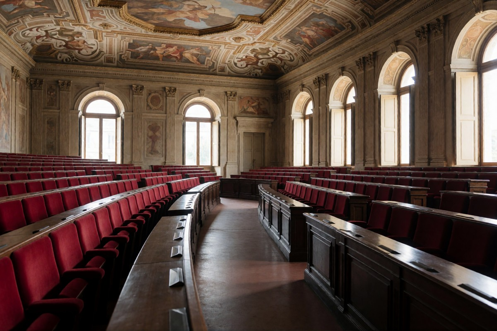

Economia · 20 novembre 2026
La patrimoniale è una rapina? L'editoriale del Riformista
Sul Riformista Pasquale Ferraro sostiene che una tassa sui grandi patrimoni resta «in fondo una rapina» e che la ricchezza va attirata, non tassata. L'editoriale per gli abbonati, con il commento dell'autore e il punto dove la tesi non convince.
di Franco Zanghì
Una tassa sui patrimoni dei più ricchi: è giustizia sociale, o, come scrive il Riformista, una rapina? A porre la questione senza giri di parole è Pasquale Ferraro, sul Riformista di martedì 17 novembre. E la domanda arriva nel momento giusto, perché proprio sulla patrimoniale il centrosinistra rischia di dividersi prima ancora di partire.
I fatti
Come racconta lo stesso Riformista il 19 novembre, Alleanza Verdi e Sinistra ha posto un ultimatum agli alleati. Nicola Fratoianni si rivolge a Giuseppe Conte: «Se non c'è la patrimoniale, non c'è la coalizione»; Angelo Bonelli chiede che il contributo di solidarietà entri nel programma. La proposta di Avs riguarda i patrimoni netti oltre 5 milioni e 400 mila euro. Elly Schlein è favorevole a un prelievo sui grandi patrimoni, e nel Partito democratico si è discusso di una soglia di 100 milioni.

La tesi del Riformista
Per Ferraro la patrimoniale, comunque la si chiami, resta quello che è: «in fondo è una rapina». I grandi patrimoni, quando fiutano la minaccia, se ne vanno, e il conto finirebbero per pagarlo le partite Iva e il ceto medio. La sua ricetta è l'opposto: la ricchezza «va attirata, non denigrata e tassata». E un Paese che la criminalizza, avverte, si condanna alla mediocrità.
Il commento
Sulla sostanza Ferraro ha ragione. Una tassa sul patrimonio colpisce quello che una persona ha già guadagnato, e su cui ha già pagato le tasse. E l'esperienza dice che i capitali si spostano molto più in fretta delle leggi: la Francia ha abolito la sua imposta sui grandi patrimoni nel 2017, trasformandola in un'imposta sugli immobili.
Sulla parola «rapina», invece, conviene andare più piano. Chi chiede una patrimoniale non è un ladro: è convinto che le disuguaglianze siano cresciute troppo, e su questo un problema c'è. Ma una risposta sbagliata a un problema vero resta sbagliata: le disuguaglianze si combattono con il lavoro, con la crescita e con l'evasione stanata davvero.
E poi c'è la politica. Ad Avs va riconosciuta la coerenza: la patrimoniale la chiede da sempre. Ma fare di una tassa la condizione per stare insieme vuol dire costruire una coalizione sul prelievo, non sullo sviluppo. Il Partito democratico è stretto fra la sua anima riformista e gli alleati più radicali, e il ceto medio che vuole riconquistare questa proposta la teme.
Ferraro scrive che l'Italia non merita la mediocrità. Ha ragione. E la mediocrità si evita in un modo solo: facendo sì che chi ha capitali, idee e voglia di rischiare scelga di restare qui. Il campo largo, per ora, discute su come dividere la torta prima di aver deciso come farla crescere.
Fonti
- Pasquale Ferraro, «Tassa patrimoniale, così il campo largo vuole rapinare gli italiani», Il Riformista, 17 novembre 2026
- Carla Fiorellini, «Avs minaccia gli alleati sulla patrimoniale: senza intesa il campo largo salta, ma Conte pensa già alle primarie online», Il Riformista, 19 novembre 2026
- Sky TG24, «Patrimoniale, cos'è la tassa sui super ricchi: le posizioni dei partiti del campo largo», 16 novembre 2026
- Today, «La patrimoniale torna a far discutere il campo largo: Schlein apre, Bonelli a Conte», 19 novembre 2026
Articolo riferito: Pasquale Ferraro, «Tassa patrimoniale, così il campo largo vuole rapinare gli italiani», Il Riformista, 17 novembre 2026. Le soglie e le proposte citate sono quelle in discussione alla data di pubblicazione e non sono testi di legge.